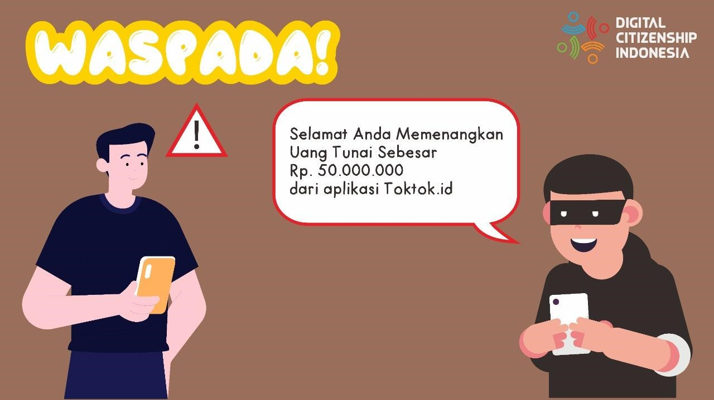
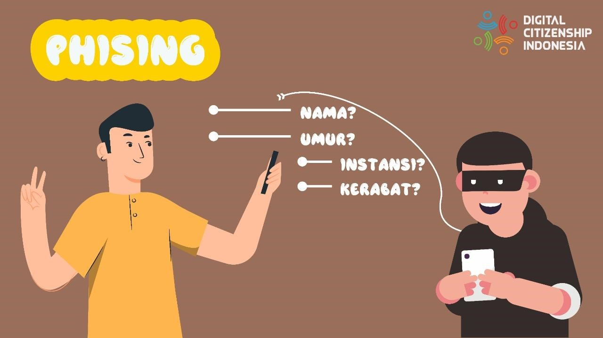
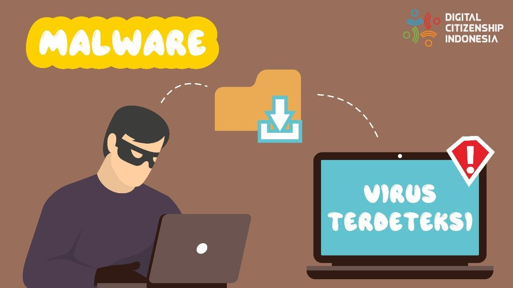

Maraknya Kejahatan Dunia Maya
Di tengah perkembangan teknologi dan ilmu pengetahuan yang begitu pesat, kejahatan dalam dunia internet atau cybercrime menjadi lebih marak ditemukan juga. Mulai dari hoax, cyberbullying, scam, phising, dan banyak hal lainnya
dapat kita temui dengan mudah di internet. Beberapa kasus sudah mulai diungkap di publik, ditujukan untuk lebih mengedukasi masyarakat untuk kejahatan di internet. Namun, akhir-akhir ini scam berada taraf paling parah di
internet untuk pembajakan data pengguna. Apa itu scam? kejahatan ini berbentuk tindakan terencana yang memiliki tujuan mendapatkan uang atau keuntungan lainnya dengan cara menipu, mengakali, dan membajak informasi orang lain
di Internet. Sebagai masyarakat digital yang baik, ada banyak cara yang dapat dilakukan untuk melindungi akun kalian dari segala bentuk scam atau kejahatan cyber lainnya, seperti:
- Berhati-hati dalam penggunaan sosial media anda, dan jangan lupa untuk mengatur privasi di setiap sosial media kalian.
- Menggunakan kata sandi yang kuat.
- Menjaga informasi pribadi kalian dan tidak membagikannya kepada pihak yang diragukan kredibilitasnya.
- Menggunakan piranti lunak anti-virus dan selalu memperbaruinya.
Selain beberapa hal tesebut, Youth Law Australia juga membagikan beberapa strategi dan juga informasi yang perlu kalian ketahui untuk melindungi diri kalian dan akun pribadi yang kalian miliki dari segala bentuk kejahatan terlebih lagi scam.
Akses ke Akun Keuangan Kalian

Mengingat mereka mengincar keuntungan dari kalian, scam atau penipuan sejenis ini ini cenderung memberikan tawaran uang atau hal menarik lainnya. Penipu biasanya akan menanyakan rincian akun bank, rincian kartu kredit kalian, atau detail informasi lainnya yang berguna untuk mengakses uang atau harta kalian. Hal yang perlu kalian ingat adalah tidak ada seorang pun dari bank, lembaga pemerintah, atau institusi lainnya yang akan menelepon Anda tanpa peringatan dan menanyakan mengenai detail tersebut.
Phising

Phishing adalah nama yang diberikan untuk scam yang berfokus pada mendapatkan detail pribadi kalian. Selanjutnya, informasi yang mereka dapat akan digunakan untuk berpura-pura menjadi diri kalian. Semakin sedikit informasi pribadi yang kalian bagikan secara online secara publik, semakin terlindungi dari juga kalian dari jenis penipuan ini. Namun, apabila kalian sering membagikan informasi pribadi kalian di internet, semakin banyak juga hal yang mereka dapat gunakan sebagai bahan penipuan mereka.
Malware

Berhati-hatilah dengan file misterius, unduhlah file yang kalian inginkan dari situs-situs terpercaya! Beberapa scam menggunakan file yang berisi malware atau perangkat lunak berbahaya, ditujukan untuk mendapat akses kedalam perangkat pribadi kalian. Anti-virus menjadi salah-satu perlindungan pertama perangkat kalian, tetapi berhati-hati dalam pengunduhan file di internet adalah satu-satunya strategi terbaik untuk menghindari malware.